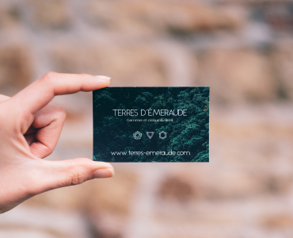
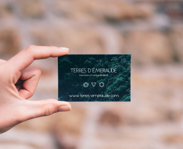
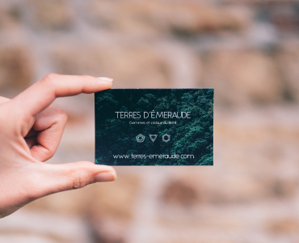

Контентні зображення
Контентні зображення - зображення, які і є контентом сайту У більшості випадків це растрові зображення (фотографії),(JPG/PNG -> WEBP).
Усі контентні зображення виводяться тегом IMG

 


Іконки - невеликі прості зображення, які підсилюють ефект тексту, або самостійно несуть певну інформацію У більшості випадків це векторні зображення(SVG).
Іконки можуть інтегруватись як тегом IMG так і через CSS (background та інші)
Елементи дизайну - веркторні, або растрові зображення (можливо з прозорістю) які є частиною дизайну сайту. Можуть бути як векторні так і растрові (SVG, JPG/PNG -> WEBP).
Елементи дизайну, частіше всього, інтегруються через CSS (background та інші)
Контентні зображення - зображення, які і є контентом сайту У більшості випадків це растрові зображення (фотографії),(JPG/PNG -> WEBP).
Усі контентні зображення виводяться тегом IMG
